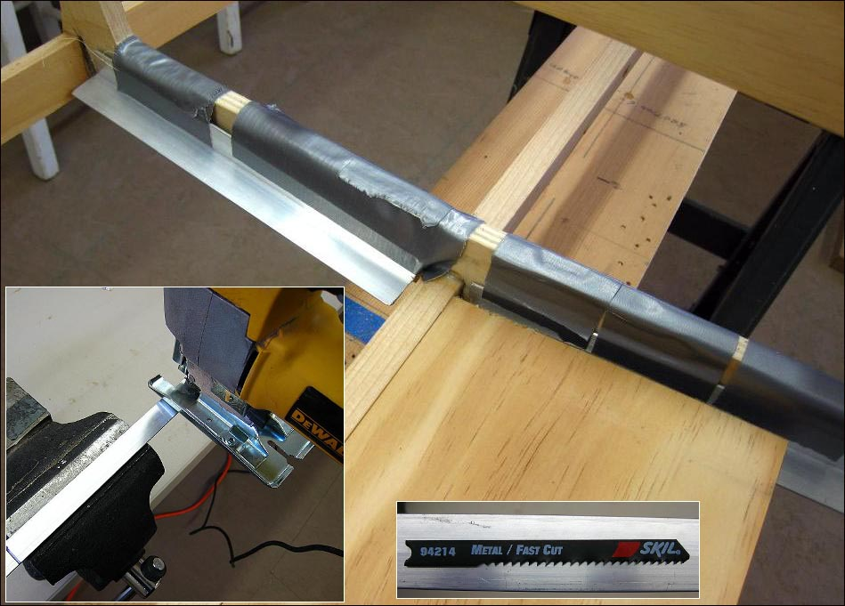

| Floor | Menu Previous Page Next Page |
|

Using a vise, cut the aluminum angle with a jig saw or hacksaw. The length of the plates is determind by the span between the keel and chines. In this case, the plates are approximately 8.5" long. After cutting, temporarily hold the plates in position with duct tape. The pine floor should be positioned with the inside edge equal to the top of the keel. The outside edge of the plate should be equal to the inside edge of the chine stringer. This will insure that the floor is as low as possible. The lower the better with regards to stability. On a smaller floor ( 20" - 22") , 1/4" solid oak can be used as on the Sea Rider / Nikumi , but for a longer floor like the Sea Bee (30"), floor flex / strength becomes a consideration. That is why a 1/2" floor is used above.
|
|